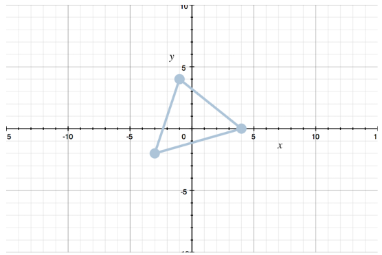
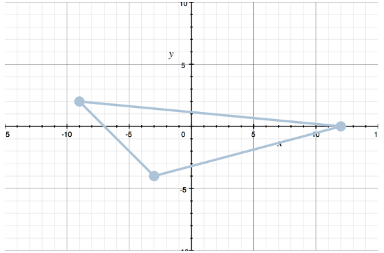
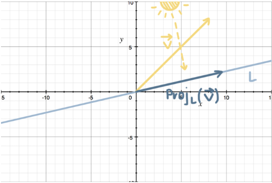

Linear Algebra, King Pt. 3
Transformations
Functions and Transformations
We can use functions to map vectors, for instance:
$ f \left( \begin{bmatrix} v_1 \\ v_2 \\ \end{bmatrix} \right) = \begin{bmatrix} 3v_1 - v_2 \\ -2v_2 \\ \end{bmatrix} $
When a function maps vectors, it is called a vector-valued function. If we map vectors from one space to another, we usually call these 'transformations' rather than functions.
$ T \left( \begin{bmatrix} v_1 \\ v_2 \\ \end{bmatrix} \right) = \begin{bmatrix} 3v_1 - v_2 \\ -2v_2 \\ \end{bmatrix} $
Whereas before we used the notation $f: x \to x+1$ to describe the mapping done by a function, we can also write $T: A \to B$. If $T$ is mapping from the 2D plane to the 2D real plane, we could write:
$T: \mathbb{R}^2 \to \mathbb{R}$
In any transformation, the domain is what we're mapping from, and the codomain is what we are mapping to. The range is within the codomain, and is the specific set of points that the mapping maps to in the codomain.
Example:
The transformation $T$ maps every vector is $\mathbb{R}^4$ to the zero vector $\overrightarrow{v} = (0,0)$ in $\mathbb{R}^2$. What is the domain, codomain, and range of $T$?
$T: \mathbb{R}^4 \to \mathbb{R}^2$, so $\mathbb{R}^4$ is the domain and $\mathbb{R}^2$ the codomain. The transformation is mapping every vector in $\mathbb{R}^4$ to only the zero vector in $\mathbb{R}^2$, so the range of $T$ is just the zero vector $\overrightarrow{v} = (0,0)$.
Transformation Matrices and the Image of the Subset
Think about transformation as a series of shifts, stretches, compressions, rotations, etc. that move a vector, or set of vectors, from one position to another.
Say we have the transformation matrix:
$ M = \begin{bmatrix} 1 & -3 \\ 4 & 0 \\ \end{bmatrix} $
In a $2 \times 2$ transformation matrix, the first column (in this case $(1,4)$) tells us where the standard basis vector $\mathbf{i} = (1,0)$ will land after the transformation. The second column tells us where the standard basis vector $\mathbf{j} = (0,1)$ will land after the transformation. The transformation matrix $M$ changes $(1,0)$ into $(1,4)$ and changes $(0,1)$ into $(-3,0)$.
The vector or vector set before a transformation has been applied is called the preimage, and afterwards, called the image.
The transformation matrix doesn't just transform the individual vectors $\mathbf{i} = (1,0)$ and $\mathbf{j} = (0,1)$, it models the transformation of every vector in the coordinate plane. Suppose you want to know what happens to $\overrightarrow{v} = (5,3)$ when transformed by:
$ \begin{bmatrix} -5 & 2 \\ -2 & 3 \\ \end{bmatrix} $
Simply multiply the transformation matrix by the vector $\overrightarrow{v}$.
$ \begin{bmatrix} -5 & 2 \\ -2 & 3 \\ \end{bmatrix} \begin{bmatrix} 5 \\ 3 \\ \end{bmatrix} $
$ = \begin{bmatrix} -5(5) + 2(3) \\ -2(5) + 3(3) \\ \end{bmatrix} $
$ = \begin{bmatrix} -25 + 6 \\ -10 + 9 \\ \end{bmatrix} $
$ = \begin{bmatrix} -19 \\ -1 \\ \end{bmatrix} $
Under this transformation, $\overrightarrow{v} = (5,3)$ transforms to $T(\overrightarrow{v}) = (-19,-1)$.
Transforming a Set
If instead of being given a single vector $\overrightarrow{a}$, we had been given a set of vectors representing the vertices of some polygon, we can apply a transformation matrix to its vertex vectors, and thereby transform the figure. We call the vector set a subset, because it is a subset of the space that it is in.
Preimage, Image, and the Kernel
Suppose a quadrilateral $Q$ is a subset of $\mathbb{R}^2$. The transformation of $Q$, $T(Q)$, will always be a subspace, closed under addition and scalar multiplication.
If we start with a subset of the domain, under the transformation $T$ it will map to the image of the subset in the codomain, but if we start with a subset of the codomain, under the inverse transformation $T^{-1}$ it will map to the preimage of the subset in the domain.
Example:
Find the preimage $A_1$ of the subset $B_1$ under the transformation $R: \mathbb{R}^2 \to \mathbb{R}^2$.
$ B_1 = \biggl\{ \begin{bmatrix} 0 \\ 0 \\ \end{bmatrix} , \begin{bmatrix} 2 \\ 3 \\ \end{bmatrix} \biggr\} $
$ T(\overrightarrow{x}) = \begin{bmatrix} -3 & 1 \\ 2 & 0 \\ \end{bmatrix} \begin{bmatrix} x_1 \\ x_2 \\ \end{bmatrix} $
We're trying to find the preimage of $B_1$ under $T$, which we'll call $T^{-1}(B_1)$.
$T^{-1}(B_1) = \biggl\{ \overrightarrow{x} \in \mathbb{R}^2 | T(\overrightarrow{x}) \in B_1 \biggr\}$
$ T^{-1}(B_1) = \biggl\{x \in \mathbb{R}^2 | \begin{bmatrix} -3 & 1 \\ 2 & 0 \\ \end{bmatrix} \begin{bmatrix} x_1 \\ x_2 \\ \end{bmatrix} = \begin{bmatrix} 0 \\ 0 \\ \end{bmatrix} \text{ or } \begin{bmatrix} -3 & 1 \\ 2 & 0 \\ \end{bmatrix} \begin{bmatrix} x_1 \\ x_2 \\ \end{bmatrix} = \begin{bmatrix} 2 \\ 3 \\ \end{bmatrix} \biggr\} $
We're trying to find all the vectors $\overrightarrow{x}$ in $\mathbb{R}^2$ that satisfy either of these matrix equations. So let's rewrite both augmented matrices in rref.
$ \begin{bmatrix} -3 & 1 & | & 0 \\ 2 & 0 & | & 0 \\ \end{bmatrix} $
$ \to \begin{bmatrix} 2 & 0 & | & 0 \\ -3 & 1 & | & 0 \\ \end{bmatrix} $
$ \to \begin{bmatrix} 1 & 0 & | & 0 \\ -3 & 1 & | & 0 \\ \end{bmatrix} $
$ \to \begin{bmatrix} 1 & 0 & | & 0 \\ 0 & 1 & | & 0 \\ \end{bmatrix} $
and
$ \begin{bmatrix} -3 & 1 & | & 2 \\ 2 & 0 & | & 3 \\ \end{bmatrix} $
$ \to \begin{bmatrix} 2 & 0 & | & 3 \\ -3 & 1 & | & 2 \\ \end{bmatrix} $
$ \to \begin{bmatrix} 1 & 0 & | & 3/2 \\ 0 & 1 & | & 13/2 \\ \end{bmatrix} $
From the first augmented matrix, we get $x_1 = 0$ and $x_2 = 0$. From the second augmented matrix, we get $x_1 = 3/2$ and $x_2 = 13/4$. Therefore,
$ \begin{bmatrix} 0 \\ 0 \\ \end{bmatrix} $ in the pre-image $A_1$ would map to $ \begin{bmatrix} 0 \\ 0 \\ \end{bmatrix} $ in the subset $B_1$ under $T$.
$ \begin{bmatrix} 3/2 \\ 13/2 \\ \end{bmatrix} $ in the pre-image $A$ would map to $ \begin{bmatrix} 2 \\ 3 \\ \end{bmatrix} $ in the subset $B_1$ under $T$.
Vector $\overrightarrow{x}$ is the null space of the transformation matrix. The vector (or set of vectors) $\overrightarrow{x}$ that makes this equation true is called the kernel of the transformation, $Ker(T)$. In other words, the kernel of a transformation $T$ is all of the vectors that result in the zero vector under the transformation $T$.
$Ker(T) = \biggl\{ \overrightarrow{x} \in \mathbb{R}^2 | T(\overrightarrow{x}) = \overrightarrow{O} \biggr\}$
Linear Transformations as Matrix-Vector Products
A linear transformation $T: \mathbb{R}^n \to \mathbb{R}^m$ is a linear transformation if, for any two vectors $\overrightarrow{u}$ and $\overrightarrow{v}$ that are both in $\mathbb{R}^n$, and for a $c$ that is also in $\mathbb{R}$ (i.e., a real number), then:
- The transformation of their sum is equivalent to the sum of their individual transformations $T(\overrightarrow{u} + \overrightarrow{v}) = T(\overrightarrow{u}) + T(\overrightarrow{v})$, and
- The transformation of a scalar multiple of the vector is equivalent to the product of the scalar and the transformation of the original vector, $T(c \overrightarrow{u}) + c T(\overrightarrow{u})$ and $T(c \overrightarrow{v}) = c T(\overrightarrow{v})$.
Matrix-Vector Products
You can always represent a linear transformation as a matrix-vector product. Say we are transforming vectors from $\mathbb{R}^2$ to vectors in $\mathbb{R}^3$, and that the transformation $T: \mathbb{R}^2 \to \mathbb{R}^3$ is described as:
$ T \left( \begin{bmatrix} x_1 \\ x_2 \\ \end{bmatrix} \right) = \begin{bmatrix} 3x_2 - x_1 \\ -x_1 + 2x_2 \\ 3x_1 + x_2 \\ \end{bmatrix} $
We need to start by thinking about the space we are transforming from. In this case, $T$ is transforming vectors from $\mathbb{R}^2$, and the identity matrix $I_2$ is:
$ \begin{bmatrix} 1 & 0 \\ 0 & 1 \\ \end{bmatrix} $
The next step is to apply $T$ to $I_2$, one column at a time.
$ T \left( \begin{bmatrix} 1 \\ 0 \\ \end{bmatrix} \right) T \left( \begin{bmatrix} 0 \\ 1 \\ \end{bmatrix} \right) $
For the transformation of the first column of the identity matrix, we plug into $T$ to get:
$ T \left( \begin{bmatrix} 1 \\ 0 \\ \end{bmatrix} \right) = \begin{bmatrix} 3(0) - 1 \\ -1 + 2(0) \\ 3(1) + 0 \\ \end{bmatrix} = \begin{bmatrix} 3 \\ 2 \\ 1 \\ \end{bmatrix} $
Now we get the matrix:
$ \left[ T \left( \begin{bmatrix} 1 \\ 0 \\ \end{bmatrix} \right) T \left( \begin{bmatrix} 0 \\ 1 \\ \end{bmatrix} \right) \right] = \begin{bmatrix} -1 & 3 \\ -1 & 2 \\ 3 & 1 \\ \end{bmatrix} $
which means we can rewrite the transformation $T$ as:
$ T \left( \begin{bmatrix} x_1 \\ x_2 \\ \end{bmatrix} \right) = \begin{bmatrix} -1 & 3 \\ -1 & 2 \\ 3 & 1 \\ \end{bmatrix} \begin{bmatrix} x_1 \\ x_2 \\ \end{bmatrix} $
Example:
Use a matrix-vector product to transform the triangle with vertices $(-1,4)$, $(-3,2)$, and $(4,0)$. The transformation $T$ should include a reflection over the x-axis and a horizontal stretch by a factor of $3$.

A reflection over the x-axis means we'll take the y-coordinate of each point in the triangle and multiply it by $-1$; so each transformed point will be $(x, -y)$.
To stretch horizontally by a factor of $3$, we'll need to multiply every x-value by $3$. So after both the reflection and the stretch, each transformed point will be $(3x, t)$. Therefore, if a position vector,
$ \overrightarrow{v} = \begin{bmatrix} v_1 \\ v_2 \\ \end{bmatrix} $
represents a point in the original triangle, then a position vector,
$ \overrightarrow{v} = \begin{bmatrix} 3v_1 \\ -v_2 \\ \end{bmatrix} $
represents the corresponding point in the transformed triangle. So a transformation $T$ that expresses the reflection and stretch for any vector in $\mathbb{R}^2$ is:
$ T \left( \begin{bmatrix} v_1 \\ v_2 \\ \end{bmatrix} \right) = \begin{bmatrix} 3v_1 \\ -v_2 \\ \end{bmatrix} $
Because we are transforming from $\mathbb{R}^2$, we can use $T$ to transform each column of the $I_2$ identity matrix.
$ T \left( \begin{bmatrix} 1 \\ 0 \\ \end{bmatrix} \right) = \begin{bmatrix} 3(1) \\ 0 \\ \end{bmatrix} = \begin{bmatrix} 3 \\ 0 \\ \end{bmatrix} $
$ T \left( \begin{bmatrix} 0 \\ 1 \\ \end{bmatrix} \right) = \begin{bmatrix} 3(0) \\ -1 \\ \end{bmatrix} = \begin{bmatrix} 0 \\ -1 \\ \end{bmatrix} $
which means we can rewrite the transformation $T$ as:
$ T \left( \begin{bmatrix} v_1 \\ v_2 \\ \end{bmatrix} \right) = \begin{bmatrix} 3 & 0 \\ 0 & -1 \\ \end{bmatrix} = \begin{bmatrix} v_1 \\ v_2 \\ \end{bmatrix} $
Now we can apply the transformation matrix to each of the vertices of the traingle, $(-1,4)$, $(-3,-2)$, and $(4,0)$.
$ T \left( \begin{bmatrix} -1 \\ 4 \\ \end{bmatrix} \right) = \begin{bmatrix} 3 & 0 \\ 0 & -1 \\ \end{bmatrix} \begin{bmatrix} -1 \\ 4 \\ \end{bmatrix} = \begin{bmatrix} 3(-1) + 0(4) \\ 0(-1) - 1(4) \\ \end{bmatrix} = \begin{bmatrix} -3 \\ -4 \\ \end{bmatrix} $
$ T \left( \begin{bmatrix} -3 \\ -2 \\ \end{bmatrix} \right) = \begin{bmatrix} 3 & 0 \\ 0 & -1 \\ \end{bmatrix} \begin{bmatrix} -3 \\ -2 \\ \end{bmatrix} = \begin{bmatrix} 3(-3) + 0(-2) \\ 0(-3) - 1(-2) \\ \end{bmatrix} = \begin{bmatrix} -9 \\ 2 \\ \end{bmatrix} $
$ T \left( \begin{bmatrix} 4 \\ 0 \\ \end{bmatrix} \right) = \begin{bmatrix} 3 & 0 \\ 0 & -1 \\ \end{bmatrix} \begin{bmatrix} 4 \\ 0 \\ \end{bmatrix} = \begin{bmatrix} 3(4) + 0(0) \\ 0(4) - 1(0) \\ \end{bmatrix} = \begin{bmatrix} 12 \\ 0 \\ \end{bmatrix} $

Linear Transformations as Rotations
We can use a linear transformation to rotate a vector by a certain angle, either in degrees or radians. Instead of using the appropriate identity matrix like we did for reflecting, stretching, and compressing, we'll use a matrix specifically for rotations. The matrix will still always match the dimension of the space in which we are transforming.
If we are rotating in $\mathbb{R}^2$, we are rotating counter-clockwise around the origin through the angle $\theta$, the transforming rotation matrix will be:
$ Rot_{\theta} = \begin{bmatrix} cos ~\theta & -sin ~\theta \\ sin ~\theta & cos ~\theta \\ \end{bmatrix} $
If rotating in $\mathbb{R}^3$, the transforming rotation matrix will be different depending on which axis we are rotating around.
$ Rot_{\theta ~around ~x} = \begin{bmatrix} 1 & 0 & 0 \\ 0 & cos ~\theta & -sin ~\theta \\ 0 & sin ~\theta & cos ~\theta \\ \end{bmatrix} $
$ Rot_{\theta ~around ~x} = \begin{bmatrix} cos ~\theta & 0 & sin ~\theta \\ 0 & 1 & 0 \\ -sin ~\theta & 0 & cos ~\theta \\ \end{bmatrix} $
$ Rot_{\theta ~around ~x} = \begin{bmatrix} cos ~\theta & -sin ~\theta & 0 \\ sin ~\theta & cos ~\theta & 0 \\ 0 & 0 & 1 \\ \end{bmatrix} $
So if we know the angle by which we're trying to rotate a vector, we can plug the angle into the rotation matrix, and then multiply it by the vector we want to transform.
Rotations follow the following properties:
$Rot_{\theta} (\overrightarrow{u} + \overrightarrow{v}) = Rot_{\theta} (\overrightarrow{u}) + Rot_{\theta} (\overrightarrow{v})$
$Rot_{\theta} (c \overrightarrow{u}) = c ~Rot_{\theta} (\overrightarrow{u})$
Example:
Rotate $\overrightarrow{x}$ by an angle of $\theta = 135^{\circ}$, where $\overrightarrow{x} = (3,2)$.
$ Rot_{135^{\circ}} (\overrightarrow{x}) = \begin{bmatrix} cos(135^{\circ}) & -sin(135^{\circ}) \\ sin(135^{\circ}) & cos(135^{\circ}) \\ \end{bmatrix} \begin{bmatrix} x_1 \\ x_2 \\ \end{bmatrix} $
We can get the sine and cosine values at $\theta = 135^{\circ}$ from the unit circle.
$ \begin{bmatrix} cos(135^{\circ}) & -sin(135^{\circ}) \\ sin(135^{\circ}) & cos(135^{\circ}) \\ \end{bmatrix} = \begin{bmatrix} - \frac{\sqrt{2}}{2} & - \frac{\sqrt{2}}{2} \\ \frac{\sqrt{2}}{2} & - \frac{\sqrt{2}}{2} \\ \end{bmatrix} $ $ Rot_{135^{\circ}} = \left( \begin{bmatrix} 3 \\ 2 \\ \end{bmatrix} \right) = \begin{bmatrix} - \frac{\sqrt{2}}{2} & - \frac{\sqrt{2}}{2} \\ \frac{\sqrt{2}}{2} & - \frac{\sqrt{2}}{2} \\ \end{bmatrix} \begin{bmatrix} 3 \\ 2 \\ \end{bmatrix} $
$ Rot_{135^{\circ}} = \left( \begin{bmatrix} 3 \\ 2 \\ \end{bmatrix} \right) = \begin{bmatrix} - \frac{3 \sqrt{2}}{2} & - \frac{2 \sqrt{2}}{2} \\ \frac{3 \sqrt{2}}{2} & - \frac{2 \sqrt{2}}{2} \\ \end{bmatrix} $ $ Rot_{135^{\circ}} \left( \begin{bmatrix} 3 \\ 2 \\ \end{bmatrix} \right) = \begin{bmatrix} \frac{-5 \sqrt{2}}{2} \\ \frac{\sqrt{2}}{2} \\ \end{bmatrix} $
Projections as Linear Transformations
We want to define a projection of a vector onto a line, and show how that projection can always be expressed as a linear transformation. Say you are given some line $L$ in 2D space, and a vector $\overrightarrow{v}$, illustrated below.

The projection of $\overrightarrow{v}$ onto $L$ we write as $Proj_L(\overrightarrow{v})$ as the 'shadow' that $\overrightarrow{v}$ casts onto $L$. If we name a vector $\overrightarrow{x}$ that lies on $L$, we could say that the projection of $\overrightarrow{v}$ onto $L$ is just some scaled version of $\overrightarrow{x}$, and write the projection as:
$Proj_L(\overrightarrow{v}) = c \overrightarrow{x}$
The vector $Proj_L(\overrightarrow{v})$ is some vector in $L$, where $\overrightarrow{v} - Proj_L(\overrightarrow{v})$ is orthogonal to $L$. We can determine the value of $c$ as:
$c = \frac{ \overrightarrow{v} \cdot \overrightarrow{x} }{ \overrightarrow{x} \cdot \overrightarrow{x} }$
Example:
Find the projection of $\overrightarrow{v}$ onto $M$ if:
$ M = \biggl\{ c \begin{bmatrix} 1 \\ 3 \\ \end{bmatrix} | c \in \mathbb{R} \biggr\} $
$ \overrightarrow{v} = \begin{bmatrix} 0 \\ 2 \\ \end{bmatrix} $
$ Proj_M (\overrightarrow{v}) = \frac{ \begin{bmatrix} 0 & 2 \\ \end{bmatrix} \cdot \begin{bmatrix} 1 \\ 3 \\ \end{bmatrix} }{ \begin{bmatrix} 1 & 3 \\ \end{bmatrix} \cdot \begin{bmatrix} 1 \\ 3 \\ \end{bmatrix} } \cdot \begin{bmatrix} 1 \\ 3 \\ \end{bmatrix} $
$ Proj_M (\overrightarrow{v}) = \frac{0(1) + 2(3)}{1(1) + 3(3)} \cdot \begin{bmatrix} 1 \\ 3 \\ \end{bmatrix} $
$ Proj_M (\overrightarrow{v}) = \frac{6}{10} \cdot \begin{bmatrix} 1 \\ 3 \\ \end{bmatrix} = \frac{3}{5} \cdot \begin{bmatrix} 1 \\ 3 \\ \end{bmatrix} = \begin{bmatrix} 3/5 \\ 9/5 \\ \end{bmatrix} = \begin{bmatrix} 0.6 \\ 1.8 \\ \end{bmatrix} $
Normalizing the Vector That Defines the Line
How can we always get a correct value for the projection, when the vector we use to define the line could change to any vector that is collinear with the line? In the last example, we defined the line with $\overrightarrow{x} = (1,3)$, but could have defined the line $M$ as $\overrightarrow{x} = (2,6)$, $\overrightarrow{x} = (-1,-3)$, or any of the infinitely many vectors that lie along $M$.
This brings up the point that we could have used a unit vector instead. Given a vector $\overrightarrow{x}$ that lies along the line, we could normalize it to its corresponding unit vector using:
$\overrightarrow{u} = \frac{1}{ || \overrightarrow{x} || } \overrightarrow{x}$
If doing this, we can simplify the projection formula. A vector dotted with itself is equivalent to the square of that vector's length.
$Proj_L (\overrightarrow{v}) = \left( \frac{ \overrightarrow{v} \cdot \overrightarrow{x} }{ || \overrightarrow{x} ||^2 } \right) \overrightarrow{x}$
If we've normalized $\overrightarrow{x}$, then the length of $\overrightarrow{x}$ is $1$, which means the projection formula becomes:
$Proj_L (\overrightarrow{v}) = \left( \frac{\overrightarrow{v} \cdot \overrightarrow{x} }{1^2} \right) \overrightarrow{x}$
$Proj_L (\overrightarrow{v}) = ( \overrightarrow{v} \cdot \overrightarrow{x} ) \overrightarrow{x}$
Furthermore, we've changed $\overrightarrow{x}$ into the unit vector $\hat{u}$, so the projection formula is:
$Proj_L (\overrightarrow{v}) = (\overrightarrow{v} \cdot \hat{u}) \hat{u}$
Let's continue on with the previous example. We were told that the line $M$ was defined by the vector $\overrightarrow{x} = (1,3)$. We could have normalized that vector as:
$|| \overrightarrow{x} || = \sqrt{ 1^2 + 3^2 } = \sqrt{1+9} = \sqrt{10}$
The unit vector associated with $\overrightarrow{x} = (1,3)$ would be:
$ \hat{u} = \frac{1}{\sqrt{10}} \begin{bmatrix} 1 \\ 3 \\ \end{bmatrix} = \begin{bmatrix} \frac{1}{\sqrt{10}} \\ \frac{3}{\sqrt{10}} \\ \end{bmatrix} $
And the projection of $\overrightarrow{v} = (0,2)$ onto $M$ would have been:
$ Proj_M (\overrightarrow{v}) = \left( \begin{bmatrix} 0 & 2 \\ \end{bmatrix} \cdot \begin{bmatrix} \frac{1}{\sqrt{10}} \\ \frac{3}{\sqrt{10}} \\ \end{bmatrix} \right) \begin{bmatrix} \frac{1}{\sqrt{10}} \\ \frac{3}{\sqrt{10}} \\ \end{bmatrix} $
$ Proj_M (\overrightarrow{v}) = \left(0 \left( \frac{1}{\sqrt{10}} \right) + 2 \left( \frac{3}{\sqrt{10}} \right) \right) \begin{bmatrix} \frac{1}{\sqrt{10}} \\ \frac{3}{\sqrt{10}} \\ \end{bmatrix} $
$ Proj_M (\overrightarrow{v}) = \frac{6}{\sqrt{10}} \begin{bmatrix} \frac{1}{\sqrt{10}} \\ \frac{3}{\sqrt{10}} \\ \end{bmatrix} $
$ Proj_M (\overrightarrow{v}) = \frac{6}{\sqrt{10}} = \begin{bmatrix} 6/10 \\ 18/10 \\ \end{bmatrix} = \begin{bmatrix} 3/5 \\ 9/5 \\ \end{bmatrix} = \begin{bmatrix} 0.6 \\ 1.8 \\ \end{bmatrix} $
The projection of a vector $\overrightarrow{v}$ onto the line $L$ is always a linear transformation.
$Proj_L(\overrightarrow{a} + \overrightarrow{b}) = Proj_L(\overrightarrow{a}) + Proj_L(\overrightarrow{b})$
It's closed under scalar multiplication because the projection of the product of a scalar and a vector is equivalent to the product of that scalar and the projection of the vector.
$Proj_L(c \overrightarrow{a}) = c ~Proj_L(\overrightarrow{a})$
Assume for now that the projection is a transformation from $\mathbb{R} \to \mathbb{R}^2$. To find the matrix $A$, we start with the $I_2$ identity matrix, and call the unit vector $\hat{u} = (u_1, u_2)$. The matrix $A$ is then:
$ A = \left[ \left( \begin{bmatrix} 1 \\ 0 \\ \end{bmatrix} \cdot \begin{bmatrix} u_1 \\ u_2 \\ \end{bmatrix} \right) \begin{bmatrix} u_1 \\ u_2 \\ \end{bmatrix} \left( \begin{bmatrix} 0 \\ 1 \\ \end{bmatrix} \cdot \begin{bmatrix} u_1 \\ u_2 \\ \end{bmatrix} \right) \begin{bmatrix} u_1 \\ u_2 \\ \end{bmatrix} \right] $
$ A = \left[ 1(u_1) + 0(u_2) \begin{bmatrix} u_1 \\ u_2 \\ \end{bmatrix} (0(u_1 + 1u_2)) \begin{bmatrix} u_1 \\ u_2 \\ \end{bmatrix} \right] $
$ A = \left[ u_1 \begin{bmatrix} u_1 \\ u_2 \\ \end{bmatrix} u_2 \begin{bmatrix} u_1 \\ u_2 \\ \end{bmatrix} \right] $
$ A = \begin{bmatrix} u_1^2 & u_2u_1 \\ u_1u_2 & u_2^2 \\ \end{bmatrix} $
In other words, given any unit vector $\hat{u} = (u_1, u_2)$ along the line $L$, the projection of the vector $\overrightarrow{v}$ onto $L$, assuming that we've defined $L$ by a unit vector $\hat{u}$, is:
$Proj_L (\overrightarrow{v}) = (\overrightarrow{v} \cdot \hat{u}) \hat{u} = A \overrightarrow{v}$
$ Proj_L (\overrightarrow{v}) = \begin{bmatrix} u_1^2 & u_1u_2 \\ u_1u_2 & u_2^2 \\ \end{bmatrix} \overrightarrow{v} $
Working with the example from earlier, we are trying to project $\overrightarrow{v} = (0,2)$ onto $M$, where $M$ was defined by the unit vector.
$ \hat{u} = \begin{bmatrix} \frac{1}{\sqrt{10}} \\ \frac{3}{\sqrt{10}} \\ \end{bmatrix} $
Using the new formula for the projection as the matrix-vector product, we could say that the projection of $\overrightarrow{v}$ onto $M$ is:
$ Proj_M (\overrightarrow{v}) = \begin{bmatrix} \left( \frac{1}{\sqrt{10}} \right)^2 & \left( \frac{1}{\sqrt{10}} \right) \left( \frac{3}{\sqrt{10}} \right) \\ \left( \frac{1}{\sqrt{10}} \right) \left( \frac{3}{\sqrt{10}} \right) & \left( \frac{3}{\sqrt{10}} \right)^2 \\ \end{bmatrix} \begin{bmatrix} 0 \\ 2 \\ \end{bmatrix} $
First find the matrix $A$.
$ A = \begin{bmatrix} \left( \frac{1}{\sqrt{10}} \right)^2 & \left( \frac{1}{\sqrt{10}} \right) \left( \frac{3}{\sqrt{10}} \right) \\ \left( \frac{1}{\sqrt{10}} \right) \left( \frac{3}{\sqrt{10}} \right) & \left( \frac{3}{\sqrt{10}} \right)^2 \\ \end{bmatrix} $
$ A = \begin{bmatrix} \frac{1}{10} & \frac{3}{10} \\ \frac{3}{10} & \frac{9}{10} \\ \end{bmatrix} $
Then the projection of $\overrightarrow{v}$ onto $M$ is:
$ Proj_M \overrightarrow{v}) = \begin{bmatrix} \frac{1}{10} & \frac{3}{10} \\ \frac{3}{10} & \frac{9}{10} \\ \end{bmatrix} \begin{bmatrix} 0 \\ 2 \\ \end{bmatrix} $
$ Proj_M \overrightarrow{v}) = \begin{bmatrix} \frac{1}{10}(0) & \frac{3}{10}(2) \\ \frac{3}{10}(0) & \frac{9}{10}(2) \\ \end{bmatrix} $
$ Proj_M \overrightarrow{v}) = \begin{bmatrix} 6/10 \\ 18/10 \\ \end{bmatrix} = \begin{bmatrix} 3/5 \\ 9/5 \\ \end{bmatrix} = \begin{bmatrix} 0.6 \\ 1.8 \\ \end{bmatrix} $
It's helpful to rewrite the projection into a transformation matrix, which we can apply to any vector we want to project onto the line.
Compositions of Linear Transformations
If we know the transformations $S$ and $T$ are linear transformations, the composition of transformations $T(S(\overrightarrow{x}))$ is also a linear transformation, and they can each be written as a matrix-vector product.
Example:
The transformation $S: X \to Y$ transforms vectors in the subset $X$ into vectors in the subset $Y$. The transformation $T: Y \to Z$ transforms vectors in the subset $Y$ into vectors in the subset $Z$. The subsets $X$, $Y$, and $Z$ are all in $\mathbb{R}^2$. Find a matrix that represents the composition of the transformations $T \cdot S$, and then use it to transform $\overrightarrow{x}$ into its associated vector $\overrightarrow{z}$ in $Z$.
$ S(\overrightarrow{x}) = \begin{bmatrix} 3x_1 \\ x_1 - x_2 \\ \end{bmatrix} $
$ T(\overrightarrow{x}) = \begin{bmatrix} 2x_1 + 4x_2 \\ -x_2 \\ \end{bmatrix} $
$ \overrightarrow{x} = \begin{bmatrix} 3 \\ 4 \\ \end{bmatrix} $
We need to start by representing each transformation $S$ to each column of the identity matrix gives:
$ S \left( \begin{bmatrix} 1 \\ 0 \\ \end{bmatrix} \right) = \begin{bmatrix} 3(1) \\ 1-0 \\ \end{bmatrix} = \begin{bmatrix} 0 \\ -1 \\ \end{bmatrix} $
$ S \left( \begin{bmatrix} 0 \\ 1 \\ \end{bmatrix} \right) = \begin{bmatrix} 3(0) \\ 0-1 \\ \end{bmatrix} = \begin{bmatrix} 0 \\ -1 \\ \end{bmatrix} $
So the transformation $S$ can be written as the matrix-vector product:
$ S(\overrightarrow{x}) = \begin{bmatrix} 3 & 0 \\ 1 & -1 \\ \end{bmatrix} $
Applying the transformation T to each column of the $I_2$ identity matrix gives:
$ T \left( \begin{bmatrix} 1 \\ 0 \\ \end{bmatrix} \right) = \begin{bmatrix} 2(1) + 4(0) \\ -0 \\ \end{bmatrix} = \begin{bmatrix} 2 \\ 0 \\ \end{bmatrix} $
$ T \left( \begin{bmatrix} 0 \\ 1 \\ \end{bmatrix} \right) = \begin{bmatrix} 2(0) + 4(1) \\ -1 \\ \end{bmatrix} = \begin{bmatrix} 4 \\ -1 \\ \end{bmatrix} $
So the transformation $T$ can be written as the matrix-vector product:
$ T(\overrightarrow{y}) = \begin{bmatrix} 2 & 4 \\ 0 & -1 \\ \end{bmatrix} \overrightarrow{y} $
If we call the matrix from $S$:
$ A = \begin{bmatrix} 3 & 0 \\ 1 & -1 \\ \end{bmatrix} $
and we call the matrix from $T$:
$ B = \begin{bmatrix} 2 & 4 \\ 0 & -1 \\ \end{bmatrix} $
then the composition of the transformations can be written as the matrix vector product:
$T(S(\overrightarrow{x}) = BA \overrightarrow{x}$
$ T(S(\overrightarrow{x})) = \begin{bmatrix} 2 & 4 \\ 0 & -1 \\ \end{bmatrix} \begin{bmatrix} 3 & 0 \\ 1 & -1 \\ \end{bmatrix} \overrightarrow{x} $
Now we can multiply the matrices.
$ C = \begin{bmatrix} 2 & 4 \\ 0 & -1 \\ \end{bmatrix} \begin{bmatrix} 3 & 0 \\ 1 & -1 \\ \end{bmatrix} $
$ C = \begin{bmatrix} 2(3) + 4(1) & 2(0) + 4(-1) \\ 0(3) - 1(1) & 0(0) - 1(-1) \\ \end{bmatrix} $
$ C = \begin{bmatrix} 6+4 & 0-4 \\ 0-1 & 0+1 \\ \end{bmatrix} $
$ C = \begin{bmatrix} 10 & -4 \\ -1 & 1 \\ \end{bmatrix} $
This matrix will allow us to transform any vector $\overrightarrow{x}$ from the original subset $X$ through the subset $Y$ and into the subset $Z$.
$ T(S(\overrightarrow{x})) = \begin{bmatrix} 10 & -4 \\ -1 & 1 \\ \end{bmatrix} \overrightarrow{x} $
The problem asks us to transform $\overrightarrow{x} = (3,4)$, so we find the matrix-vector product:
$ T \left( S \left( \begin{bmatrix} 3 \\ 4 \\ \end{bmatrix} \right) \right) = \begin{bmatrix} 10 & -4 \\ -1 & 1 \\ \end{bmatrix} \begin{bmatrix} 3 \\ 4 \\ \end{bmatrix} $
$ T \left( S \left( \begin{bmatrix} 3 \\ 4 \\ \end{bmatrix} \right) \right) = \begin{bmatrix} 10(3) - 4(4) \\ -1(3) + 1(4) \\ \end{bmatrix} $
$ T \left( S \left( \begin{bmatrix} 3 \\ 4 \\ \end{bmatrix} \right) \right) = \begin{bmatrix} 30 - 16 \\ -3 + 4 \\ \end{bmatrix} $
$ T \left( S \left( \begin{bmatrix} 3 \\ 4 \\ \end{bmatrix} \right) \right) = \begin{bmatrix} 14 \\ 1 \\ \end{bmatrix} $
Here is a link to part 4